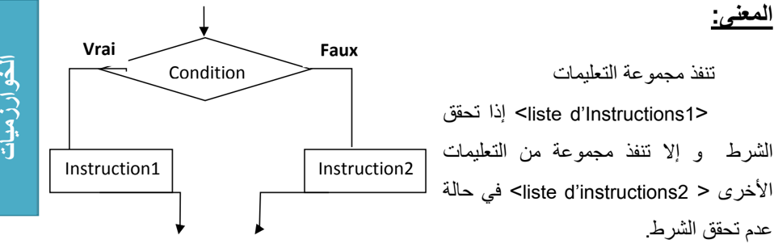
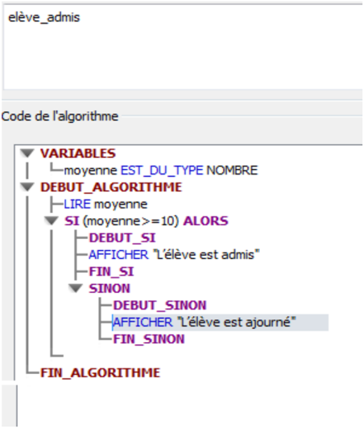
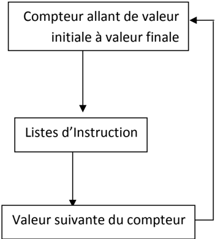
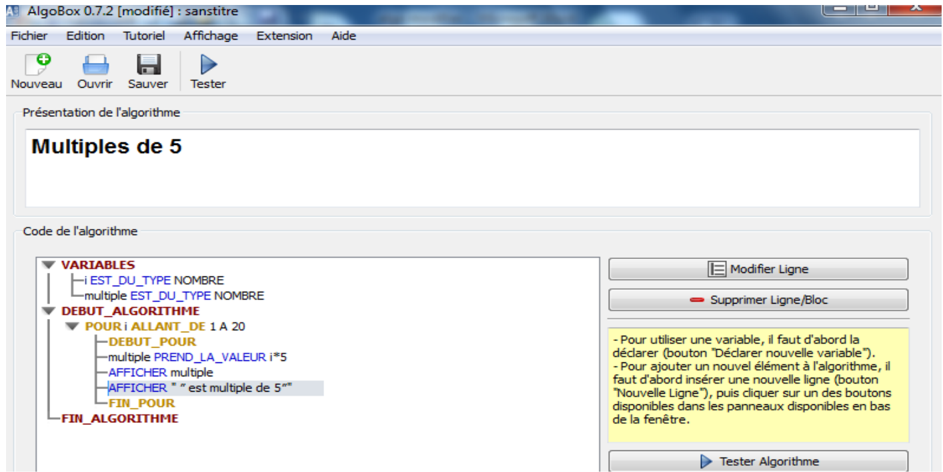

كلمة خوارزمية مشتقة من اسم العالم الفارسي محمد بن موسى الخوارزمي (780م إلى 840م)، وقد برع هذا العالم في علم الرياضيات والفلك، ووضع مبادئ علم الجبر، وألف كتاب الجبر والمقابلة، واشتغل على جداول الضرب والقسمة والحساب العشري وحساب الظل.
أطلق هذا الاسم "الخوارزميات" Algorithmes، وظل متداولًا في أوروبا إلى أن حمل مدلولًا جديدًا مرتبطًا بالبرمجة.
هي مجموعة من الخطوات الرياضية والمنطقية المتسلسلة والمحدودة، اللازمة لحل مسألة ما والوصول إلى نتائج محددة اعتبارًا من معطيات ابتدائية.
يشمل الهيكل العام للخوارزمية ثلاث أجزاء أساسية، وهي كالآتي:
##### جزء En-tête
يحتوي هذا الجزء على اسم الخوارزمية الذي يحدد نسبةً للمسألة المراد حلها.
##### جزء التصريحات Déclarations
يتم في هذا الجزء حجز مكان في الذاكرة لقائمة المتغيرات وقائمة الثوابت التي تستعمل في جزء التعليمات من الخوارزمية.
##### جزء التعليمات Instructions
يتضمن هذا الجزء ثلاث مراحل أساسية هي:
##### الكلمات المحجوزة Mots clés
هي كلمات تتخلل الأجزاء الأساسية الثلاث للهيكل العام للخوارزمية، يمكن كتابتها بأحرف لاتينية كبيرة أو صغيرة دون تفرقة، ولدينا من خلال الهيكل العام الكلمات المحجوزة الآتية:
ملاحظة: توجد كلمات محجوزة أخرى يمكن مصادفتها في مختلف أنواع الخوارزميات.
أسماء المعرفات هي الأسماء التي تطلق على البيانات سواء كانت معطيات أو نتائج، متغيرة منها أو ثابتة، فكل عنصر نستعمله في الخوارزمية له اسم معرف وحيد. ولتسمية المتغيرات والثوابت لابد من احترام القواعد الآتية:
##### ملاحظة: اصطلاحًا، يستحسن كتابة معرفات الثوابت بالأحرف الكبيرة (Majuscules).
يمكننا استعمال عدة أنواع من البيانات في الخوارزمية، نذكر منها الأنواع الأساسية الآتية:
أمثلة:
Const ou Constante <Identificateur> = <Valeur>
أمثلة:
Constante
PI = 3.14
B = Vrai
Prénom = "Zahra"
Var ou Variable <Identificateur> : <Type>
أمثلة:
Variable
Nom, Prénom : chaine de caractères
x, y, z : réel
| الصيغة | الرمز | العملية الحسابية |
|---|---|---|
| A = X + Y | + | الجمع |
| A = 5 - 3 | - | الطرح |
| A = 2 * B | * | الضرب |
| A = X / Y | / | القسمة |
| A = C ^ 2 | ^ | الأس |
| A = 7 * ( M - N ) | ( ) | الأقواس |
| المعنى | العملية |
|---|---|
| يساوي | = |
| يختلف | <> |
| أصغر من | < |
| أصغر من أو يساوي | <= |
| أكبر من | > |
| أكبر من أو يساوي | >= |
التعليمة: هي أمر يسمح للجهاز بتحديد العملية المراد إنجازها.
يمكن التعبير عن مسار حل مسألة ما لكتابة خوارزمية بواسطة التعليمات الخمسة الآتية:
##### 1. تعليمة الإسناد Instruction d'affectation
تسمح بإسناد قيمة محددة أو نتيجة صيغة إلى متغير ما في الخانة الذاكرة (case mémoire) المحجوزة له.
الشكل النظامي (Syntaxe):
Nom de variable ← Expression
المعنى: المتغير يأخذ قيمة الصيغة.
مثال:
Surface_rect ← largeur * longueur
PI ← 3.14
##### 2. تعليمة القراءة Instruction de lecture
تسمح بإدخال قيمة إلى الجهاز بواسطة لوحة المفاتيح ووضعها في خانة ذاكرة.
الشكل النظامي (Syntaxe):
Lire(Nom de variable)
المعنى: هذه التعليمة أمر يطلب أخذ القيمة المعطاة بواسطة لوحة المفاتيح ووضعها في الخانة الذاكرة المحجوزة للمتغير.
أمثلة:
##### 3. تعليمة الكتابة Instruction d'écriture
تسمح بإظهار قيمة معينة على الشاشة.
الشكل النظامي (Syntaxe):
Ecrire("Expression")
المعنى: هذه التعليمة أمر بإظهار الصيغة المحصورة بين المزدوجتين على الشاشة.
أمثلة:
Ecrire("Entrez la valeur de S")
هذه التعليمة تسمح بإظهار الصيغة الآتية على الشاشة: Entrez la valeur de S
Ecrire("2")
Ecrire(5 - 3)
هاتان التعليمتان تسمحان بإظهار 2 على الشاشة.
##### 4. التعليمة الشرطية Instruction conditionnelle
تطلب الخوارزمية في بعض الحالات أثناء الكتابة إلى بعض التعليمات بالتناوب (غير متسلسلة)، يطلق عليها اسم التعليمات الشرطية التي تقيد بشرط معين، إذا تحقق هذا الأخير نقوم بعملية وإلا نقوم بعملية أخرى. نميز نوعين من التعليمات الشرطية هما:
###### أ. التعليمة الشرطية البسيطة:
إذا تحقق الشرط تنفذ التعليمة.
الشكل النظامي:
Si <Condition> alors
<Instructions>
المعنى: تنفذ مجموعة التعليمات <Instructions> إذا تحقق الشرط <Condition>.
###### ب. التعليمة الشرطية الاختيارية:
إذا تحقق الشرط تنفذ مجموعة من التعليمات، وإلا تنفذ مجموعة أخرى من التعليمات.
الشكل النظامي:
Si <Condition> alors
<liste d'instructions 1>
Sinon
<liste d'instructions 2>
FinSi

Suite de l'algorithme
مثال: كتابة الخوارزمية التي تسمح بإظهار على الشاشة نتيجة نجاح تلميذ أو رسوبه.
Algorithme Elève_admis
Variable
Moyenne : réel
Début
Lire(Moyenne)
Si Moyenne >= 10 Alors
Ecrire("L'élève est admis")
Sinon
Ecrire("L'élève est ajourné")
FinSi
Fin

##### 5. التعليمة التكرارية Instruction répétitive
يستعمل هذا النوع لتكرار تنفيذ مجموعة من التعليمات، يرتبط هذا التكرار بتحقق شرط معين، ومادام هذا الشرط محققًا يعاد تنفيذ مجموعة من التعليمات. هناك نوعان من التعليمات التكرارية:

###### أ. التعليمة التكرارية Tant que
في حالة عدم معرفة عدد التكرارات لتنفيذ التعليمات وارتباط التكرار بتحقيق شرط معين نستعمل الحلقة Tant que.
الشكل النظامي:
Tant que <Condition> faire
<Liste d'instructions>
Fin tant que
المعنى: مادام الشرط محققًا يكرر تنفيذ مجموعة من التعليمات إلى غاية عدم تحققه.
ملاحظة: الحد الأدنى للتكرارات هو "1".
مثال: أكتب الخوارزمية لحساب مجموع الأعداد الصحيحة من 1 إلى 100، وهذا في حالة ما إذا كان الشرط غير محقق من البداية.
Algorithme Somme_100valeurs
Variable
S, i : entier
Début
S ← 0
i ← 1
Tant que i <= 100 faire
S ← S + i
i ← i + 1
Fin tant que
Ecrire("la somme des valeurs de 1 à 100 est : ", S)
Fin


###### ب. التعليمة التكرارية Pour
عند معرفة عدد التكرارات في تنفيذ التعليمات نستعمل التعليمة "Pour" بعداد "Compteur" التي تتوقف عند وصول العداد إلى قيمته النهائية.
الشكل النظامي:
Pour <Nom de variable> de <valeur initiale> à <valeur finale> faire
<Liste d'instructions>
المعنى: من أجل كل قيمة من قيم العداد التي تتغير من القيمة الابتدائية إلى القيمة النهائية، تنفذ العمليات، وكل تنفيذ يكون بمقدار خطوة (pas).
شرح طريقة عمل التعليمة التكرارية Pour:

مثال: كتابة خوارزمية تسمح بإظهار على الشاشة مضاعفات العدد 5 المحصورة بين 1 و 100.
Algorithme Multiples_de_5
Variable
i, Multiple : entier
Début
Pour i de 1 à 20 Faire
Multiple ← i * 5
Ecrire(Multiple, " est multiple de 5")
Fin faire
Fin
